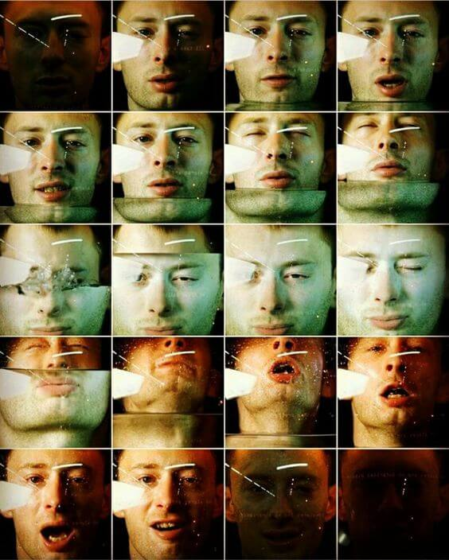

Radiohead es una banda británica de rock alternativo originaria de Abingdon-on-Thames, Inglaterra, formada en 1985 inicialmente como una banda de versiones. Está integrada por Thom Yorke (voz, guitarra, piano), Jonny Greenwood (guitarra solista, teclados, otros instrumentos), Ed O'Brien (guitarra, segunda oz), Colin Greenwood (bajo, teclados) y Phil Selway (batería, percusión). Radiohead lanzó su primer sencillo, «Creep», en 1992. Si bien la canción fue en un comienzo un fracaso comercial, se convirtió en un éxito mundial tras el lanzamiento de su álbum debut, Pablo Honey (1993) debido al boom comercial del rock alternativo. La popularidad de Radiohead en el Reino Unido aumentó con su segundo álbum, The Bends (1995). El tercero, OK Computer (1997), con un sonido expansivo y temáticas como la alienación y la globalización, les dio fama mundial y ha sido aclamado como un disco histórico de la década de 1990 y uno de los mejores álbumes de todos los tiempos. Kid A (2000) y Amnesiac (2001) significaron una evolución en su estilo musical, al incorporar música electrónica, experimental, música clásica del siglo XX, trip-hop y cool jazz. Aunque los primeros álbumes de la banda fueron especialmente influyentes en el rock y la música pop británica,su trabajo posterior ha influido a otros músicos de géneros que van desde el jazz y la música clásica contemporánea al hip-hop, la música ambient, el actual R&B e incluso el metal.
